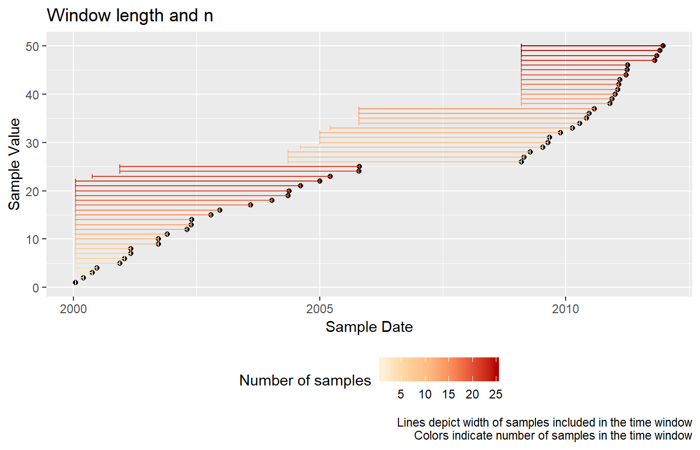
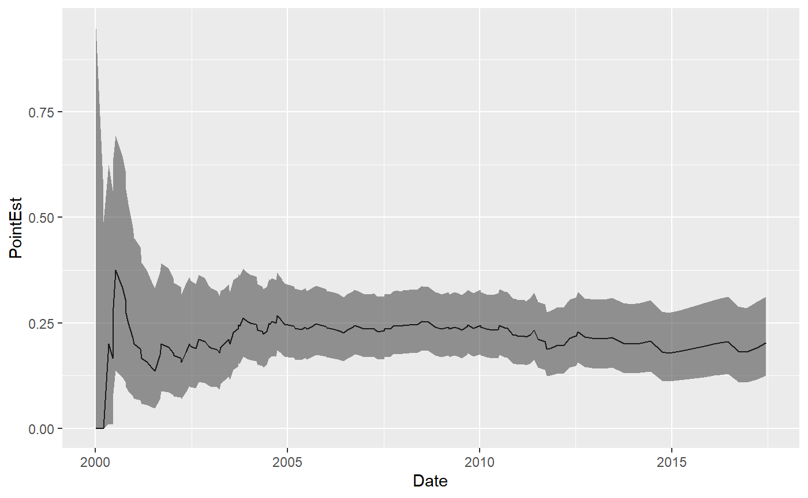
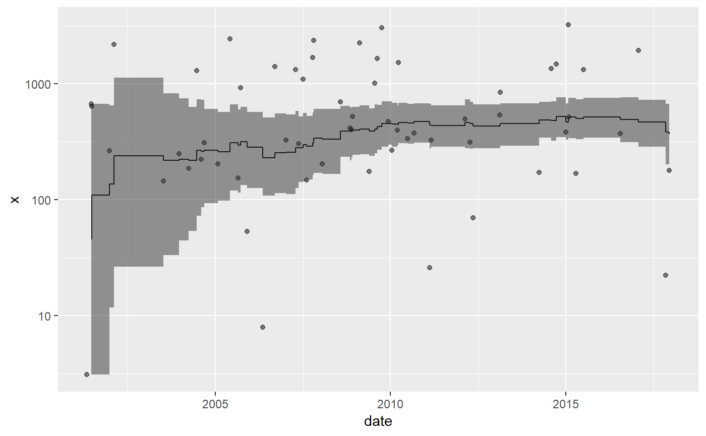
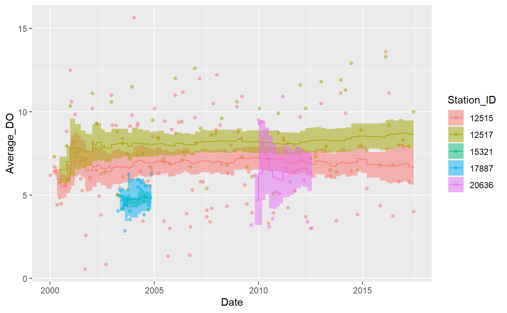
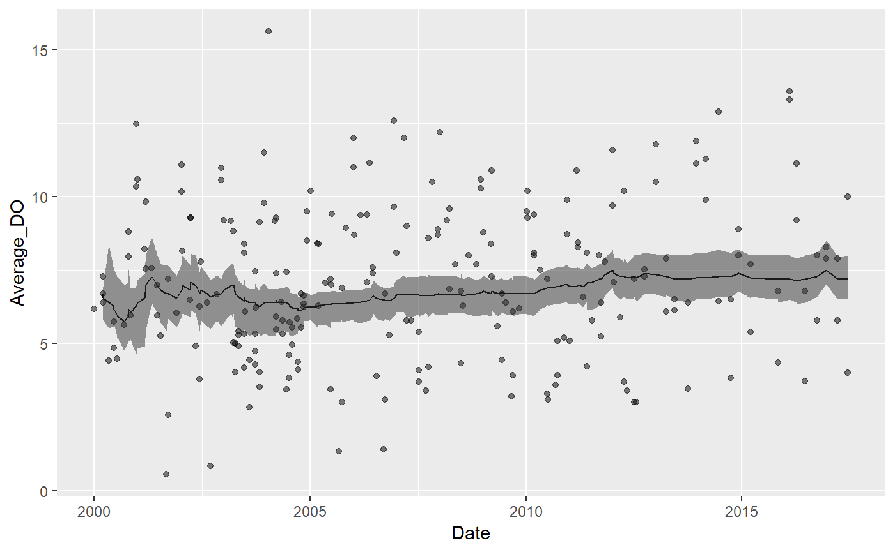
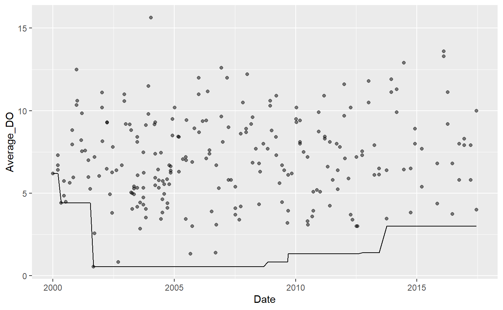
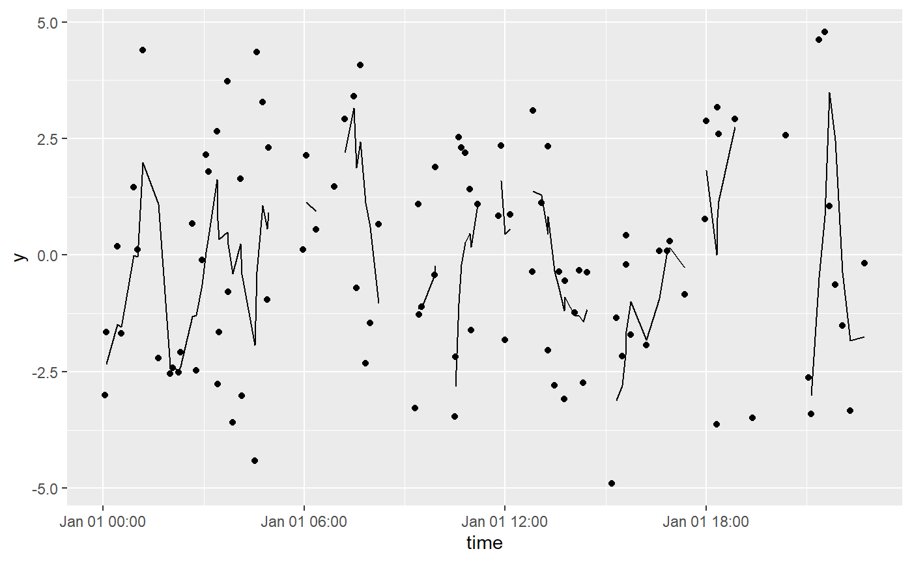
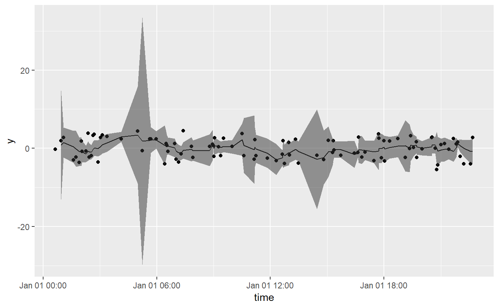
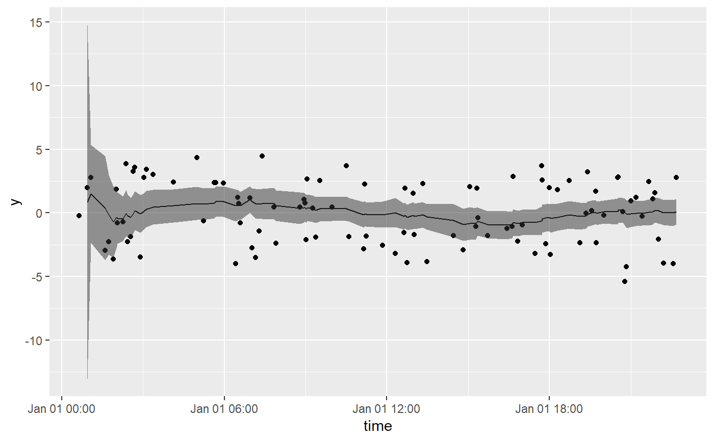

The tbrf package aims to provide functions that return rolling or moving statistical functions based on a user specified temporal time windows (eg. 1-year, 6-months, 5-hours, etc.). This package differs from most time-series analysis packages in R that rely on applying functions to a specific number of observations.
Currently tbrf provides functions to calculate binomial probability, geometric mean, mean, median, standard deviation, and sum. There is also a function to apply other R functions that return a numeric output. This vignette demonstrates how time-windows are applied to irregularly spaced data and each of the functions.
tbrf requires an input dataframe with two variables. First, a column with times or date-times formatted as class “POSIXt” or “Date”. Second, a column of observed values to calculate the statistic on. The package includes a suitable sample dataset:
data("Dissolved_Oxygen")
head(Dissolved_Oxygen)
#> # A tibble: 6 x 6
#> Station_ID Date Param_Code Param_Desc Average_DO Min_DO
#>
#> 1 12515 2000-01-03 00300 OXYGEN, DISSOLVED (MG/L) 6.19 6.19
#> 2 12515 2000-03-14 00300 OXYGEN, DISSOLVED (MG/L) 6.7 6.7
#> 3 12515 2000-03-16 00300 OXYGEN, DISSOLVED (MG/L) 6.41 6.41
#> 4 12515 2000-05-03 00300 OXYGEN, DISSOLVED (MG/L) 4.42 4.42
#> 5 12515 2000-06-15 00300 OXYGEN, DISSOLVED (MG/L) 4.86 4.86
#> 6 12515 2000-07-11 00300 OXYGEN, DISSOLVED (MG/L) 4.48 4.48 Core functions include five arguments.
.tbl = dataframe used by the function
x = column containing the values to calculate the statistic on
tcolumn = formatted date-time or date column
unit = character indicating the time unit used, one of "years", "months", "weeks", "days", "hours", "minutes", "seconds"
n = numeric, indicating the window lengthIf we want a 10-year rolling mean for the Dissolved_Oxygen dataset:
tbr_mean(Dissolved_Oxygen, x = Average_DO,
tcolumn = Date, unit = "years", n = 10)
#> # A tibble: 236 x 9
#> Station_ID Date Param_Code Param_Desc Average_DO Min_DO mean lwr_ci
#>
#> 1 12515 2000-01-03 00300 OXYGEN, D~ 6.19 6.19 NA NA
#> 2 12515 2000-03-14 00300 OXYGEN, D~ 6.7 6.7 6.73 NA
#> 3 12517 2000-03-14 00300 OXYGEN, D~ 7.3 7.3 6.73 NA
#> 4 12515 2000-03-16 00300 OXYGEN, D~ 6.41 6.41 6.65 NA
#> 5 12515 2000-05-03 00300 OXYGEN, D~ 4.42 4.42 6.20 NA
#> 6 12517 2000-06-14 00300 OXYGEN, D~ 5.74 5.74 6.13 NA
#> 7 12515 2000-06-15 00300 OXYGEN, D~ 4.86 4.86 5.95 NA
#> 8 12515 2000-07-11 00300 OXYGEN, D~ 4.48 4.48 5.76 NA
#> 9 12515 2000-09-12 00300 OXYGEN, D~ 5.64 5.64 5.75 NA
#> 10 12517 2000-10-17 00300 OXYGEN, D~ 7.96 7.96 5.97 NA
#> # ... with 226 more rows, and 1 more variable: upr_ci We can use a tidy workflow:
Dissolved_Oxygen %>% group_by(Station_ID) %>% tbr_mean(Average_DO, Date, "years", 10) #> # A tibble: 236 x 9 #> Station_ID Date Param_Code Param_Desc Average_DO Min_DO mean lwr_ci #>#> 1 12515 2000-01-03 00300 OXYGEN, D~ 6.19 6.19 NA NA #> 2 12515 2000-03-14 00300 OXYGEN, D~ 6.7 6.7 6.44 NA #> 3 12517 2000-03-14 00300 OXYGEN, D~ 7.3 7.3 NA NA #> 4 12515 2000-03-16 00300 OXYGEN, D~ 6.41 6.41 6.43 NA #> 5 12515 2000-05-03 00300 OXYGEN, D~ 4.42 4.42 5.93 NA #> 6 12517 2000-06-14 00300 OXYGEN, D~ 5.74 5.74 6.52 NA #> 7 12515 2000-06-15 00300 OXYGEN, D~ 4.86 4.86 5.72 NA #> 8 12515 2000-07-11 00300 OXYGEN, D~ 4.48 4.48 5.51 NA #> 9 12515 2000-09-12 00300 OXYGEN, D~ 5.64 5.64 5.53 NA #> 10 12517 2000-10-17 00300 OXYGEN, D~ 7.96 7.96 7 NA #> # ... with 226 more rows, and 1 more variable: upr_ci
Generate some sample data:
# Some sample data
df %
bind_rows(data.frame(date = sample(seq(as.Date('2009-01-01'),
as.Date('2011-12-30'), by = "day"), 25))) %>%
arrange(date) %>%
mutate(value = 1:50)
#> Warning: `data_frame()` is deprecated as of tibble 1.1.0.
#> Please use `tibble()` instead.
#> This warning is displayed once every 8 hours.
#> Call `lifecycle::last_warnings()` to see where this warning was generated.We can visualize the data captured in each rolling time window using tbr_misc() and the base::length():
df %>%
tbr_misc(x = value, tcolumn = date, unit = "years", n = 5, func = length) %>%
ggplot() +
geom_point(aes(date, value)) +
geom_errorbarh(aes(xmin = min_date, xmax = max_date,
y = value, color = results)) +
scale_color_distiller(type = "seq", palette = "OrRd",
direction = 1) +
guides(color = guide_colorbar(title = "Number of samples")) +
theme(legend.position = "bottom") +
labs(x = "Sample Date", y = "Sample Value",
title = "Window length and n",
caption = "Lines depict width of samples included in the time window\nColors indicate number of samples in the time window")
Plot the binomial probability that dissolved oxygen fell below 5 mg/L during the previous 7-year period:
data("Dissolved_Oxygen")
Dissolved_Oxygen %>%
mutate(x = case_when(
Average_DO >= 5 ~ 0,
Average_DO < 5 ~ 1)) %>%
tbr_binom(x, Date, "years", 7, alpha = 0.05) %>%
ggplot() +
geom_line(aes(x = Date, y = PointEst)) +
geom_ribbon(aes(x = Date, ymin = Lower, ymax = Upper), alpha = 0.5)
Plot the rolling 7-year geometric mean:
library(ggalt)
data_frame(date = sample(seq(as.Date('2001-01-01'),
as.Date('2017-12-31'),
by = "day"),
60),
x = rexp(60, 1/1000)) %>%
tbr_gmean(x, date, "years", 7, conf = 0.95, type = "perc") %>%
ggplot() +
geom_point(aes(date, x), alpha = 0.5) +
geom_step(aes(date, mean)) +
geom_ribbon(aes(x = date, ymin = lwr_ci, ymax = upr_ci), alpha = 0.5, stat = "stepribbon") +
scale_y_log10()
Plot the rolling 7-year mean:
Dissolved_Oxygen %>% mutate(Station_ID = as.factor(Station_ID)) %>% group_by(Station_ID) %>% tbr_mean(Average_DO, Date, "years", 7, conf = 0.95, type = "perc") %>% ggplot() + geom_point(aes(Date, Average_DO, color = Station_ID), alpha = 0.5) + geom_step(aes(Date, mean, color = Station_ID)) + geom_ribbon(aes(x = Date, ymin = lwr_ci, ymax = upr_ci, fill = Station_ID), alpha = 0.5, stat = "stepribbon")

Plot the rolling 7-year median:
Dissolved_Oxygen %>% mutate(Station_ID = as.factor(Station_ID)) %>% group_by(Station_ID) %>% tbr_median(Average_DO, Date, "years", 7, conf = 0.95, type = "perc") %>% ggplot() + geom_point(aes(Date, Average_DO, color = Station_ID), alpha = 0.5) + geom_step(aes(Date, median, color = Station_ID)) + geom_ribbon(aes(x = Date, ymin = lwr_ci, ymax = upr_ci, fill = Station_ID), alpha = 0.5, stat = "stepribbon")

tbr_misc() is included to apply functions that accept a single vector of values.
For example, identify the minimum values during the previous 7 year time periods:
Dissolved_Oxygen %>% tbr_misc(Average_DO, Date, "years", 7, func = min) %>% ggplot() + geom_point(aes(Date, Average_DO), alpha = 0.5) + geom_line(aes(Date, results))

Allowable character values for unit include c("years", "months", "weeks", "days", "hours", "minutes", "seconds"). Example using "minutes" and "hours":
y = 3 * sin(2 * seq(from = 0, to = 4*pi, length.out = 100)) + rnorm(100)
time = sample(seq(as.POSIXct(strptime("2017-01-01 00:01:00", "%Y-%m-%d %H:%M:%S")),
as.POSIXct(strptime("2017-01-01 23:00:00", "%Y-%m-%d %H:%M:%S")),
by = "min"), 100)
df %
tbr_mean(y, time, "minutes", n = 30) %>%
ggplot() +
geom_point(aes(time, y)) +
geom_line(aes(time, mean))
df %>% tbr_mean(y, time, "minutes", n = 60) %>% ggplot() + geom_point(aes(time, y)) + geom_line(aes(time, mean))

df %>% tbr_mean(y, time, "hours", n = 5) %>% ggplot() + geom_point(aes(time, y)) + geom_line(aes(time, mean))

Confidence intervals in tbr_gmean, tbr_mean, and tbr_median are calculated using boot_ci. If you do not need confidence intervals, calculation times are substantially shorter. parallel, ncores, and cl arguments are passed to boot and can improve computation times. An example using parallel processing for Windows systems is below:
library(snow) cl